Bienvenidos a Emisora Historia De Un Legado
QUIÉNES SOMOS
MISIÓN
Salvaguardar la memoria histórica y fortalecer el tejido social a través de la educación, la cultura y la participación comunitaria, promoviendo la identidad y el patrimonio cultural para el beneficio de las generaciones presentes y futuras.
VISIÓN
Ser un referente nacional en la preservación del patrimonio cultural y en la transformación social, impactando positivamente a comunidades vulnerables mediante iniciativas educativas, culturales y comunicativas que fomenten la identidad y la inclusión.
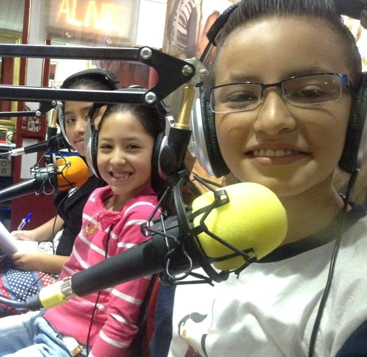
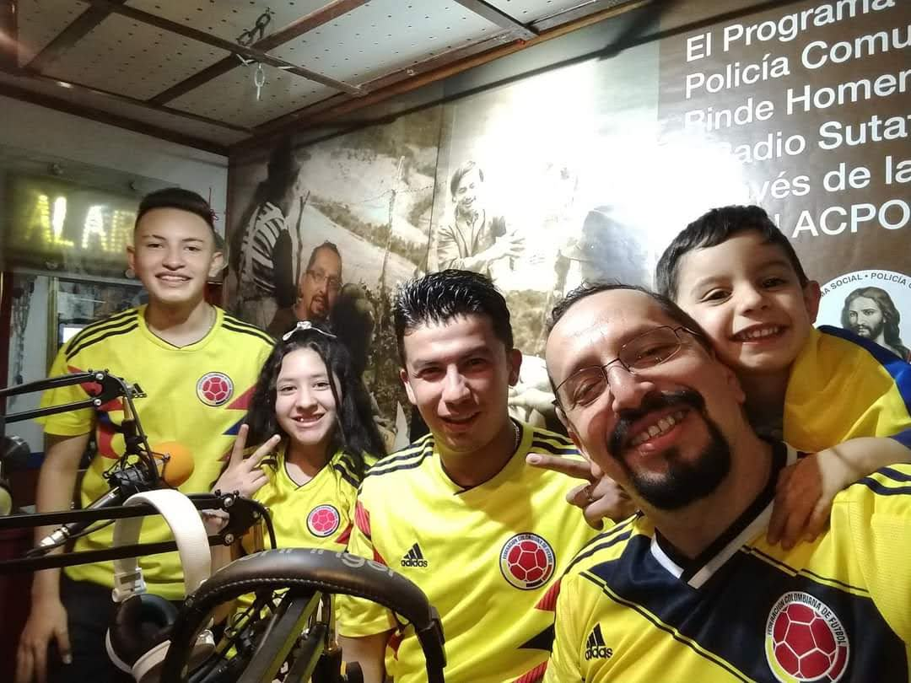
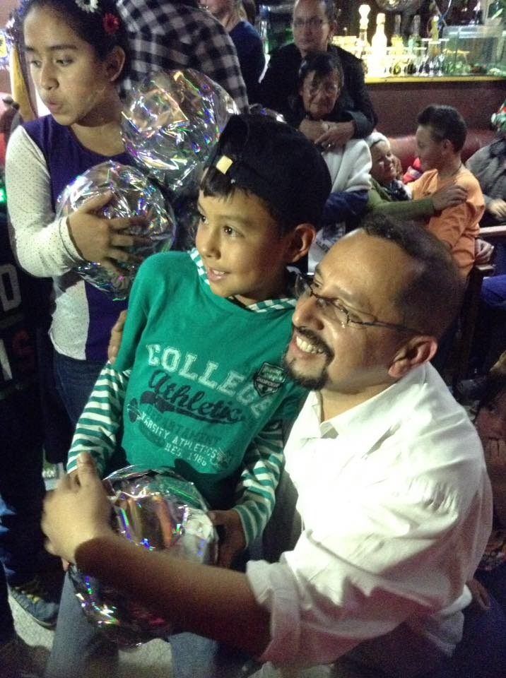
NUESTROS VALORES
1. Compromiso con la memoria histórica 🏛️ Valoramos y protegemos la historia como un pilar fundamental para la identidad cultural y el desarrollo de la comunidad.
2. Inclusión y equidad 🤝 Creemos en una sociedad justa donde todas las voces sean escuchadas y donde cada persona tenga acceso a la educación y la cultura sin distinción.
3. Solidaridad y servicio comunitario ❤️ Trabajamos con y para la comunidad, apoyando a quienes más lo necesitan, especialmente a adultos mayores, niños y jóvenes, promoviendo redes de apoyo y bienestar.
4. Innovación social 💡 Buscamos nuevas formas de comunicación y educación que impacten positivamente en la transformación social y el desarrollo comunitario.
5. Participación y sentido de pertenencia 🎤 Fomentamos la participación activa de la comunidad en nuestras iniciativas, fortaleciendo el tejido social y el amor por nuestras raíces.
6. Transparencia y responsabilidad 📖 Actuamos con ética y claridad en cada una de nuestras acciones, garantizando el buen uso de los recursos y el cumplimiento de nuestra misión.
7. Respeto por el patrimonio y la cultura 🌎 Promovemos el conocimiento y la conservación de nuestras tradiciones, costumbres y valores culturales como parte esencial del desarrollo de las generaciones futuras.
NUESTRO FUNDADOR
ERASMO ANGARITA TOVAR
Por Diego Hernán Becerra Montañez
Erasmo Angarita Tovar, nacido en San Antonio, Tolima, y actualmente residente en Bogotá, es una figura emblemática en el ámbito cultural y social de Colombia. Su formación se gestó en Acción Cultural Popular (ACPO), una experiencia que marcó sus inicios en el trabajo social y en el fomento de la educación a través de los medios, sentando las bases de un legado que aún perdura en la transformación social y cultural del país. Erasmo ha sabido fusionar su pasión por el arte con su profundo compromiso con el desarrollo comunitario, extendiendo su labor al campo de la comunicación. Como director, ha liderado proyectos fundamentales, entre ellos el Programa Social Policía Comunidad, el Programa Social Personas Mayores de 50 años, el Plan Padrinos Policía Nacional de Colombia, la Emisora Virtual ACPO Vive Radio Sutatenza y, recientemente, la Emisora Historia de un Legado. Estos proyectos no solo rescatan la esencia de la radio educativa iniciada por monseñor José Joaquín Salcedo, sino que también integran nuevas tecnologías para modernizar los métodos tradicionales de enseñanza y comunicación. Con más de 20 años de trayectoria, su trabajo ha sido un pilar al servicio de la comunidad en Ciudad Bolívar y Bogotá. El Programa Social Policía Comunidad, bajo su dirección, es un claro ejemplo de integración entre las instituciones policiales y la comunidad.

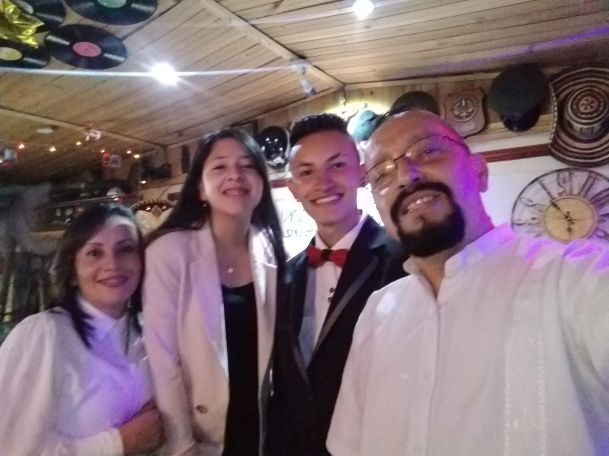
Erasmo ha trabajado para estrechar los lazos con la Policía Nacional de Colombia y el Ejército Colombiano, promoviendo iniciativas que fortalecen la confianza mutua y mejoran la seguridad y el bienestar social en los territorios. Este modelo de colaboración demuestra cómo la comunicación y el compromiso social pueden funcionar como puentes para unir a diversos sectores en la búsqueda del bien común. El impacto de su trabajo ha sido reconocido a nivel nacional. En 2009, se rindió homenaje a su labor en el Salón Elíptico del Capitolio Nacional, en el marco del Día Mundial de los Derechos Humanos. Posteriormente, al cumplir 15 años de vinculación con la Policía Nacional, fue galardonado con la Medalla al Mérito Ciudadano, un reconocimiento otorgado por el Director General de la Policía Nacional y el Director General de Seguridad Ciudadana, que subraya la importancia y el compromiso de su gestión. En definitiva, la trayectoria de Erasmo Angarita Tovar es un ejemplo inspirador de cómo el arte, la comunicación y el compromiso social pueden converger para transformar comunidades. Su labor ha dejado una huella profunda en la sociedad colombiana, demostrando que la integración de la cultura y la educación es una herramienta poderosa para el cambio y el empoderamiento de las nuevas generaciones. Su legado sigue siendo un faro de esperanza y un llamado a la acción para continuar fortaleciendo el tejido social, promoviendo la justicia y la inclusión en todos los rincones del país.
EQUIPO DE TRABAJO
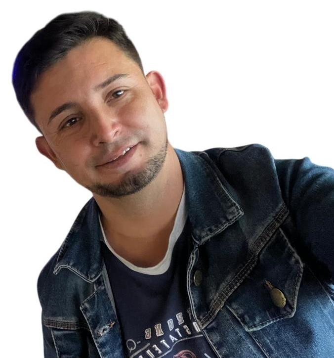
Diego Hernán Becerra es un líder comprometido con el servicio a la comunidad, impulsando iniciativas de apoyo y colaboración sin buscar reconocimiento personal. Su labor se basa en la solidaridad y el altruismo, demostrando que el verdadero impacto social se logra a través del compromiso genuino. A lo largo de su trayectoria, ha inspirado a otros a sumarse a causas sociales, fortaleciendo el tejido comunitario y promoviendo redes de apoyo que generan un impacto real y sostenible. Su liderazgo, basado en la empatía y el servicio, ha permitido el desarrollo de proyectos transformadores que perduran en el tiempo. Con 40 años de edad y una sólida experiencia laboral y social, Diego se convierte en un pilar clave para Historia de un Legado Emisora Virtual. Su energía inagotable y su visión de cambio aportan luz y fortaleza a esta misión de servir y transformar vidas. Ahora, como nuevo Coordinador de Relaciones Institucionales, asume el reto de enlazar nuevos vínculos que permitan seguir creciendo como institución. Su capacidad para generar alianzas estratégicas y fortalecer lazos con otras organizaciones será fundamental para ampliar el impacto y alcance de Historia de un Legado Emisora Virtual, consolidándola como un referente de compromiso social y transformación comunitaria. "No dejes pasar un solo momento de tu vida sin compartir la alegría de un servicio desinteresado."
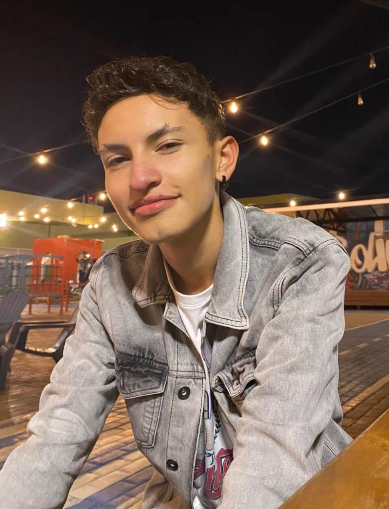
Johan Sebastián Beltrán Es un joven profesional comprometido con la comunicación y el servicio comunitario. Desde temprana edad ha colaborado en los programas sociales de Erasmo Angarita Tovar, destacándose en ACPO VIVE como productor y presentador de Los Niños Tienen la Palabra. Su talento y creatividad en la producción radiofónica le han valido el reconocimiento como un "joven genio del máster". Su labor va más allá de lo técnico, participando activamente en eventos que fortalecen el tejido social y cultural. Ahora, en Historia de un Legado Emisora Virtual, sigue siendo un pilar fundamental para esta misión de apoyo y transformación comunitaria.
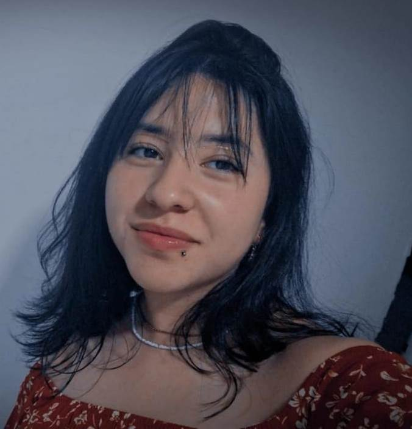
Laura Sofía Escala Rojas Es una joven apasionada por la comunicación y el servicio comunitario. Tras haber sido parte de Los Niños Tienen la Palabra y el mundo de Sofía en su infancia, hoy inicia su etapa universitaria con el firme propósito de seguir contribuyendo a la transformación social a través de la emisora. Su crecimiento académico y su compromiso con la comunidad la impulsan a aportar nuevas ideas y conocimientos en Historia de un Legado Emisora Virtual, reafirmando su papel como agente de cambio y fortaleciendo el legado de quienes trabajan por un futuro más unido y solidario.
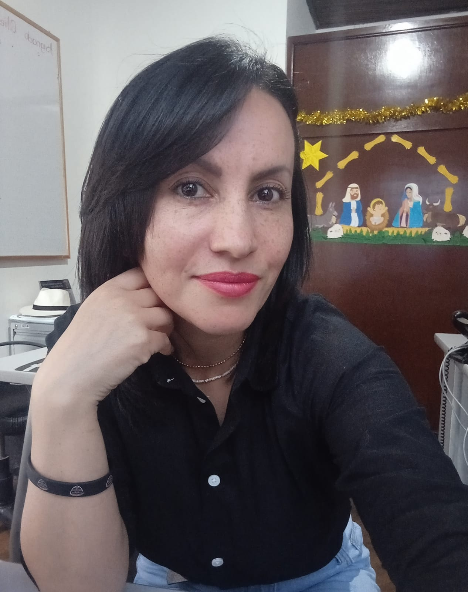
Bella Luz Rojas Angarita Desde su niñez, Bella Luz Rojas Angarita ha sido un pilar en los programas sociales, aportando su dulzura y energía a cada iniciativa. Su sonrisa ha dejado huella en cada labor comunitaria, reflejando su compromiso inquebrantable con el servicio. Ha llevado su pasión a otro nivel con su programa Radial Bella Reflexión, un espacio que honra su esencia luchadora e irreverente. Su talento y carisma la han convertido en "la reina de la consola", consolidando su voz como un faro de inspiración y cambio. Su historia es testimonio de que cuando el compromiso y la pasión se unen, el impacto trasciende generaciones. ¡Que su voz siga inspirando y su luz siga brillando en cada espacio que toque!
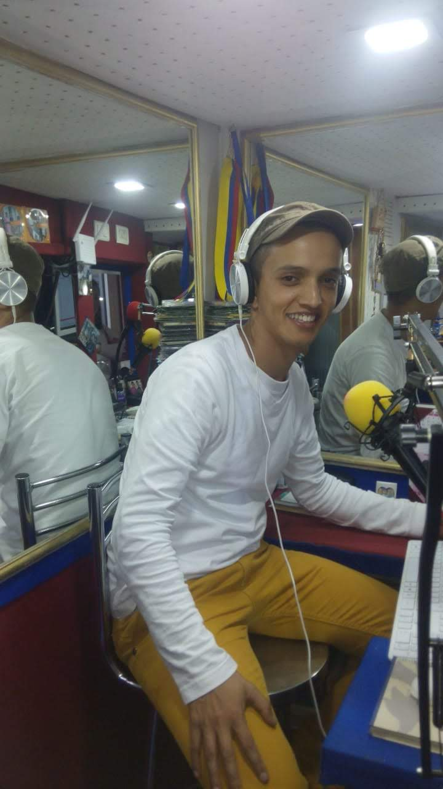
Edison Andrés Rojas Angarita Ingeniero de software creador de RojasTech, es quien da vida a nuestra página web en esta nueva etapa. Con un enfoque claro, veraz y juvenil, proyecta nuestra labor para llegar de manera efectiva a quienes más lo necesitan. Desde su infancia, ha estado vinculado al servicio social a través de la Fundación Futuro de Ciudad Bolívar, participando en múltiples programas hasta hoy, donde sigue aportando su talento en Historia de un Legado Emisora Virtual.
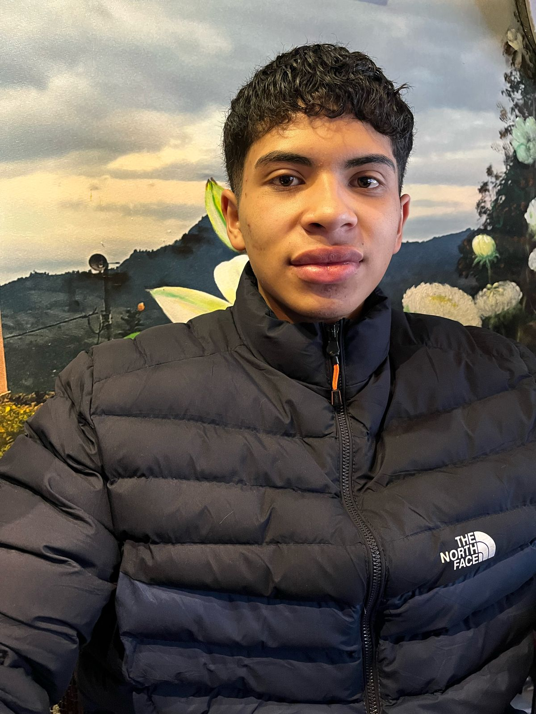
Jaider Alejandro Centeno Viloria En septiembre de 2021, Jaider Alejandro Centeno Viloria llegó a nuestros programas con una energía inigualable, dispuesto a aportar su talento, compromiso y calidez humana. Desde el primer día, su carisma, alegría y entrañable don de gentes se hicieron sentir, convirtiéndolo en una pieza fundamental dentro de nuestra misión. Como el miembro más joven de nuestro equipo, Jaider ha demostrado que la verdadera vocación de servicio no tiene edad. Su entrega y entusiasmo han llenado de vitalidad cada espacio, brindando a nuestros adultos mayores compañía, escucha y momentos de felicidad, y a los niños inspiración y apoyo incondicional. Su presencia no solo representa una nueva generación comprometida con la misión de la Emisora Historia de un Legado, sino también el testimonio de que cuando el corazón se inclina al servicio, se transforman vidas y se construyen caminos de esperanza.
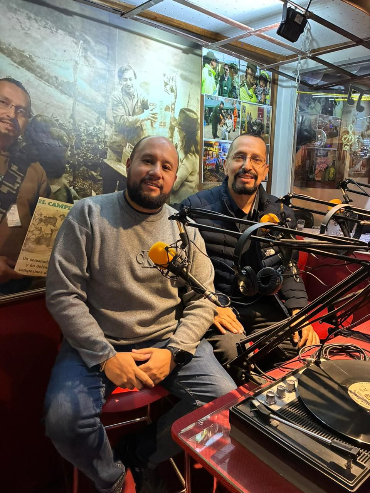
Padrinos Los Doctores Juan carlos Montaña Parra y Gregorio German Marulanda Martinez han apadrinado la Emisora Historia de un Legado y nuestros programas sociales en beneficio de la sociedad para construir un mejor país. Su contribución fortalece nuestros proyectos y nos impulsa a seguir trabajando con dedicación, responsabilidad y vocación de servicio hacia la comunidad.
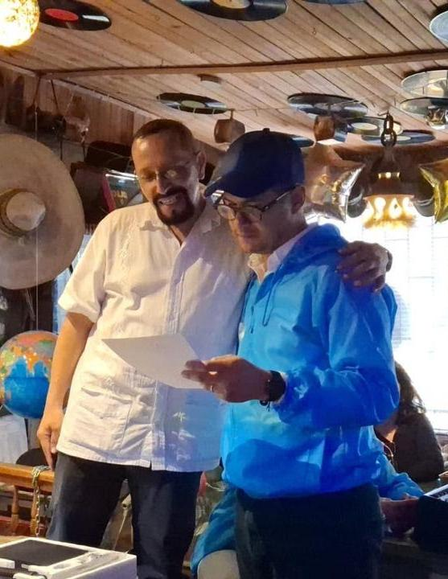
Padrinos Los Doctores Juan Carlos Montaña Parra y Gregorio Germán Marulanda Martínez acompañan y respaldan como padrinos el proyecto de la emisora Historia de un Legado y sus programas sociales orientados al servicio de la comunidad. Su apoyo y compromiso han sido fundamentales para fortalecer nuestras iniciativas, permitiéndonos continuar promoviendo valores, cultura y acciones que aportan al bienestar de la sociedad y a la construcción de un mejor país.
GESTORES DE SOPORTE TÉCNICO
Reconocemos y enaltecemos el trabajo de William Andrés García Durán y Jorge Armando Cárdenas Pacanchique, pilares fundamentales del soporte técnico de nuestra emisora. Su dedicación y esfuerzo han sido clave para hacer de nuestra emisora un legado vivo, un espacio de crecimiento y evolución constante en cada paso que damos.
🌟 RED DE APOYO: IMPULSORES DEL TRABAJO COMUNITARIO 🌟
El éxito de ACPO Vive y ahora Emisora Historia de un Legado no sería posible sin el compromiso y la entrega de quienes trabajan incansablemente para fortalecer nuestra labor. Nuestra Red de Apoyo es el motor que impulsa el crecimiento, la innovación y la conexión con nuestras comunidades.
💡 Gracias a su esfuerzo, seguimos construyendo un espacio de aprendizaje, participación y transformación social.
🔹 Nelson Mora Gestor de la nueva página web, construyendo puentes digitales para acercarnos al mundo.
🔹 Duver Arley Zuñiga Gestor de la Aplicación HD, llevando nuestra presencia al siguiente nivel tecnológico.
🔹 Erika Johana Lizcano Cardozo Representante de La Mujer Campesina en ACPO Vive, símbolo de liderazgo y empoderamiento en nuestra comunidad.
🔹 William Andrés García Durán Aliado estratégico en la consolidación de nuestra misión comunitaria.
Gracias a su entrega y compromiso, seguimos avanzando con firmeza hacia un futuro de mayor inclusión, comunicación y desarrollo.
CORRESPONSALES: VOCES QUE TRASCIENDEN FRONTERAS 🎙️
Desde distintos rincones del mundo, nuestros corresponsales son el alma viva de ACPO Vive Radio Sutatenza y ahora Emisora Historia de un Legado. Su compromiso y pasión por la comunicación fortalecen nuestra misión de conectar historias, preservar la memoria y compartir conocimientos.
💡 Admiramos su dedicación, su incansable labor y su profundo sentido de pertenencia a esta gran familia radiofónica. Gracias por ser el puente que mantiene viva nuestra historia y nuestro mensaje en cada palabra transmitida.
📌 CORRESPONSALES
📍 Héctor Darío Beltrán Acosta
Corresponsal Honorario No. 1 – Fusagasugá
📍 Sergio Arturo Deras
Corresponsal en Corquín, Departamento de Copán, Honduras Exalumno ACPO (1984-1988)
📍 Mario Torres García
Corresponsal en Nueva York, EE.UU. ACPO Móvil No. 1 Ponente Ley Retorno 1565
📍 Ricardo Amador Pérez
Corresponsal en México D.F. Promotor de campañas sociales en el D.F.
📍 Francisco Das Chagas de Moráis Moráis
Corresponsal en Natal, Brasil Doctor en Periodismo y Profesor Universitario (Investigador de ACPO – Radio Sutatenza y ACPO Vive, 2015)
📍 Gladys Gutiérrez
Corresponsal en Buenos Aires, Argentina, González Catán Periodista Deportiva, Docente Universitaria e Historiadora
📍 Maira Alejandra Espinosa
Corresponsal en Toronto, Canadá Abogada, personal de apoyo a colombianos en Canadá
📍 María José Angulo
Corresponsal en California, EE.UU. Economista, Ex Tesorera del Banco de la República Promotora de Misiones Internacionales de Salud
📍 Blanca Estela Torres Torres
Corresponsal en Morelia, Michoacán, México Artista Plástica, Historiadora y Docente
📍 René Quintero Torrecillas
Corresponsal en Campoalegre, Huila Exalumno ACPO
📍 María Esther Acevedo Correa
Corresponsal en Santiago de Cali, Valle del Cauca
📍 María de los Ángeles Murcia
Corresponsal en Neiva, Huila
📍 Pablo Antonio Torrado Torrado
Corresponsal en Saravena, Arauca Exalumno ACPO
📍 Arces Eres Aragonés
Corresponsal en Colombio, Huila
📍 Aracely Martínez
Corresponsal en Palestina, Huila Educadora ACPO
📍 Natalia Botero
Corresponsal en Medellín